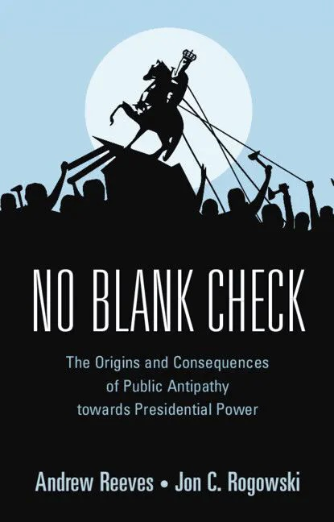

Welcome
Andrew Reeves is Professor of Political Science, Senior Advisor to the Chancellor, and Director of the Weidenbaum Center on the Economy, Government, and Public Policy. He is also a Visiting Fellow at the Hoover Institution.
Reeves’s research focuses on American political institutions, electoral behavior, and public policy, with particular emphasis on the presidency and executive power. He studies how political accountability and institutional design shape governance, policy outcomes, and voter behavior. His work shows that presidents frequently pursue partisan and electoral goals, that the public holds well-defined views on presidential power, and that local context plays a powerful role in shaping political behavior.
For more information, see his CV.
Research
Reeves’s research explores the American presidency, the geography of political life, how voters hold leaders accountable, and how public resources are distributed. He studies these questions using a range of data—from surveys and election returns to federal spending and disaster aid—to better understand the functioning of American democracy.
Presidential Power and Public Constraint
Reeves studies how presidents lead, especially when they act without Congress. This includes tools like executive orders, emergency declarations, and disaster relief. While presidents often pursue these actions to advance policy or gain political advantage, they are not free to act without consequences. In No Blank Check, Reeves & Rogowski show that the public has clear and often skeptical views about presidential power.
Geography and Political Experience
Where people live shapes their political views and the kind of government they receive. Reeves’s work shows that voters in urban, suburban, and rural communities experience democracy differently. He explores how geography influences partisanship, perceptions of fairness, and attachment to place. These spatial divides are central to understanding today’s political polarization.
Voter Behavior and Political Accountability
Much of Reeves’s research asks whether voters reward leaders for good governance or punish them for poor performance. The answer often depends on timing, visibility, and proximity. Voters are responsive when federal aid arrives quickly or when local unemployment improves, but they are less likely to notice longer-term or complex policies. This disconnect explains why some presidents prioritize short-term gains over durable policy change.
Distributive Politics and Federal Power
Presidents and other national leaders have broad discretion in how they allocate federal dollars. Reeves examines how political motivations—such as targeting swing states or rewarding co-partisans—influence the flow of resources. From disaster relief to infrastructure spending, his work shows how electoral incentives shape decisions that affect millions of Americans. This has serious implications for equity and public trust in government.
Books

No Blank Check: The Origins and Consequences of Public Antipathy toward Presidential Power (Cambridge University Press, 2022), with Jon C. Rogowski, investigates how Americans think about executive authority.
Reeves and Rogowski explore how Americans think about presidential authority, finding that many citizens are skeptical of unilateral executive action—even when undertaken by presidents they support. The book combines historical analysis, survey experiments, and public opinion data to show that concerns about constitutional limits and democratic norms shape public evaluations of presidential power. This resistance to expansive executive authority suggests that the public can act as a meaningful check on the presidency, even in a polarized era.
The Particularistic President: Executive Branch Politics and Political Inequality (Cambridge University Press), coauthored with Douglas Kriner, received the 2016 Richard E. Neustadt Award from the American Political Science Association.
Kriner and Reeves challenges the widespread belief that presidents act in the national interest, showing instead that they often favor specific constituencies—especially swing states and partisan allies—when distributing federal resources. Drawing on data from disaster declarations, defense spending, and federal grants, the authors demonstrate that presidents engage in a form of “particularism” similar to the parochial behavior commonly attributed to Congress. The book warns that increasing presidential power may not counteract legislative dysfunction but instead deepen political inequality through executive favoritism.